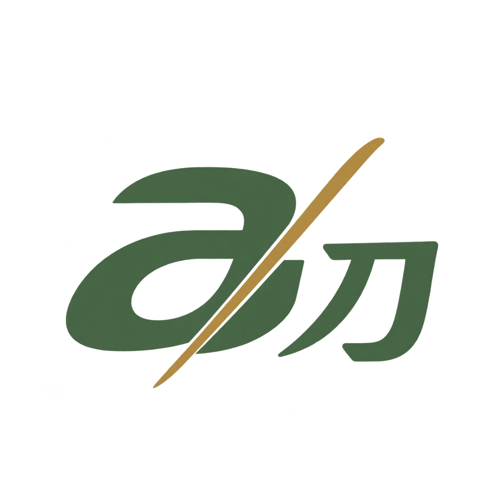
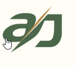
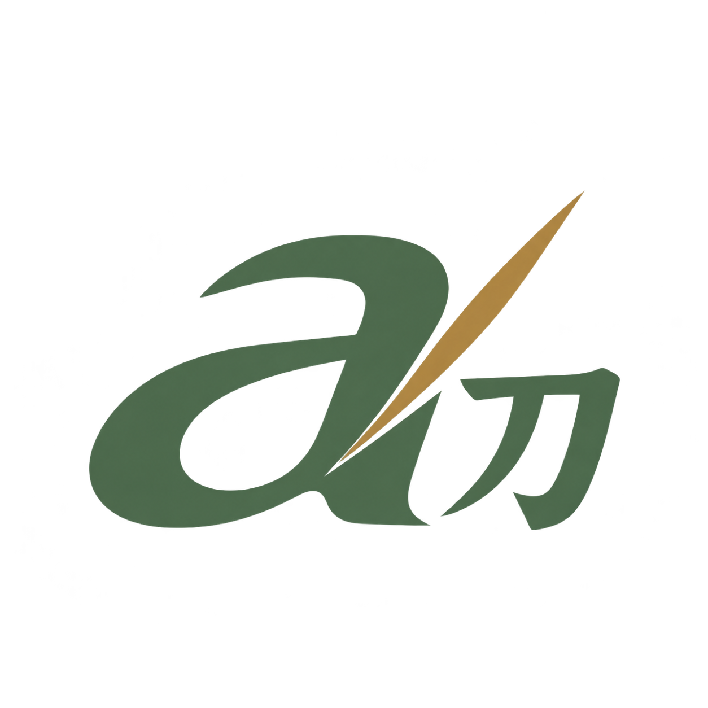
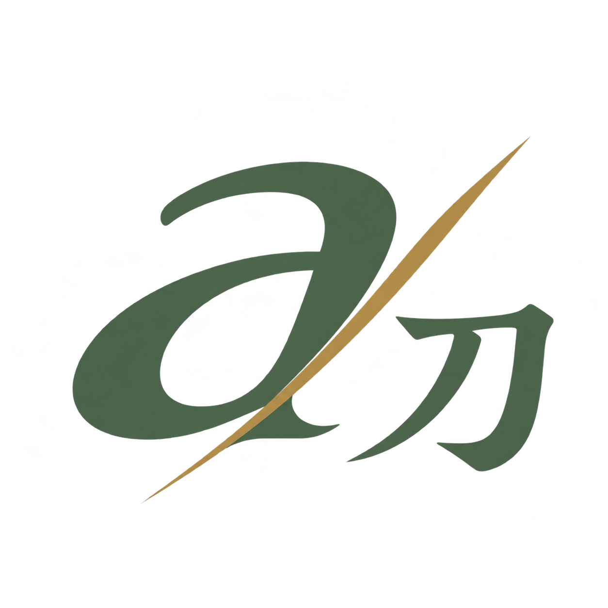
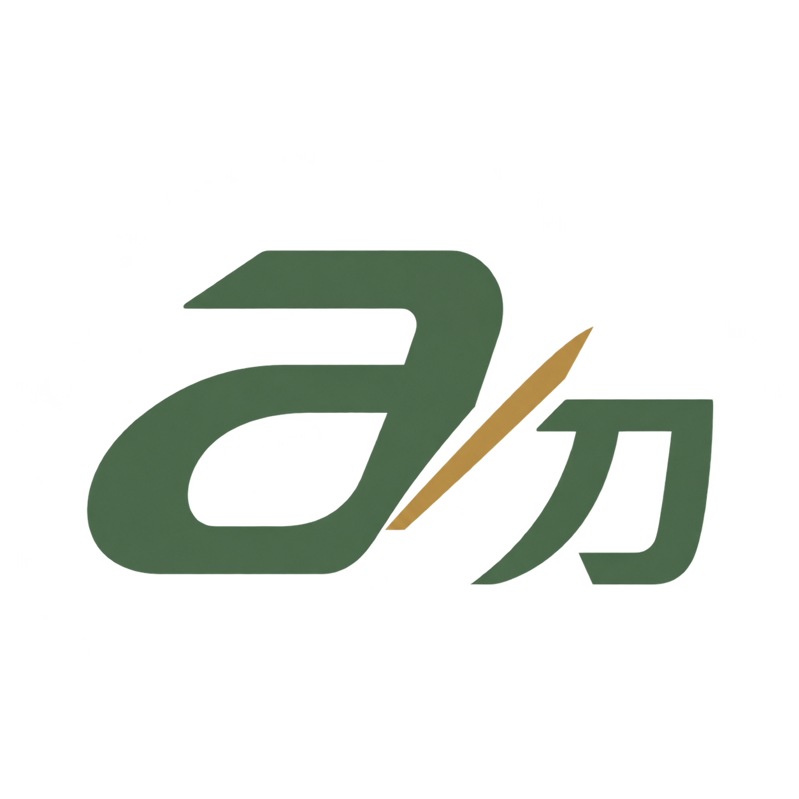
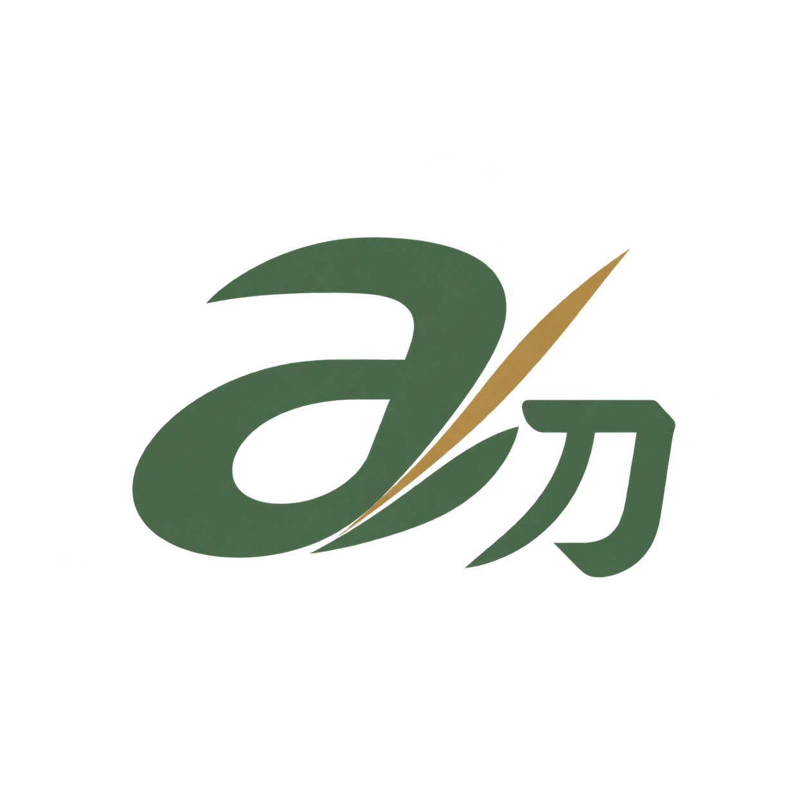
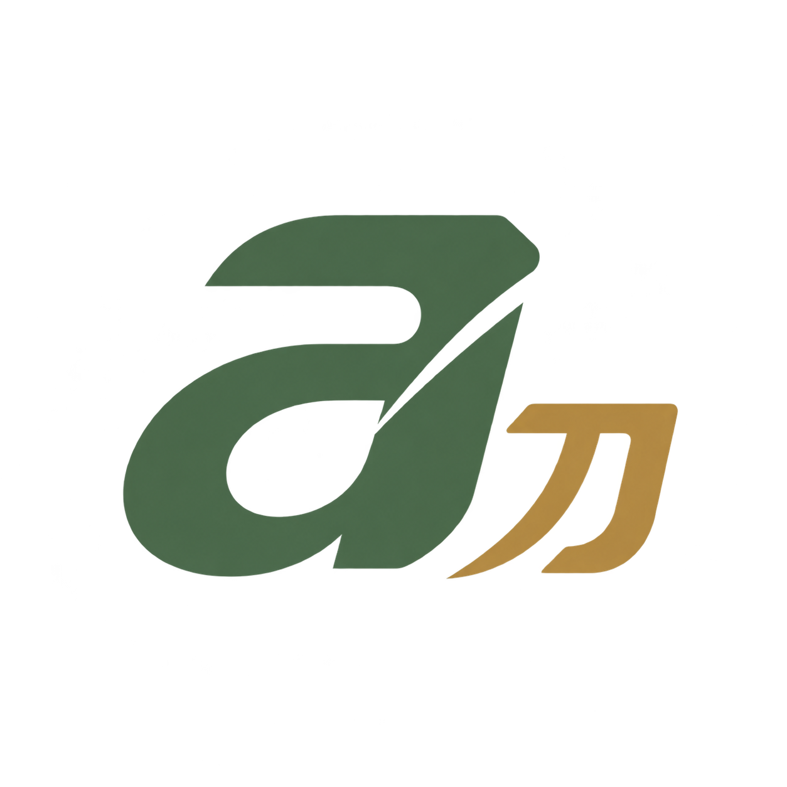

01
Balanced Cut
Closest to the reference: balanced italic forms and a restrained gold diagonal.
Download transparent PNG ↗AINKUN / ロゴ / LOGO EXPLORATION
View the latest options with separate, nearly equal-size characters →
A professional a刀 mark inspired by your reference, with calm proportions and a smaller lower-right 刀. Choose a shape first; its morning, evening, and night colors come next.


Closest to the reference: balanced italic forms and a restrained gold diagonal.
Download transparent PNG ↗
Open curves and a subtle forward lean, with a small gold accent.
Download transparent PNG ↗
Fine stroke contrast gives the mark an editorial, Japanese-inspired character.
Download transparent PNG ↗
Precise geometry and a clear silhouette for small navigation sizes.
Download transparent PNG ↗
A lightly connected monogram with a personal, fluid signature feel.
Download transparent PNG ↗
All six concepts use the same sage-and-gold palette so you can compare their shapes. Each download has a transparent background.